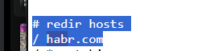

| Ник | Пост | Дата |
|---|---|---|
| yocx_xcoy | Использую свой список в ruantiblock: ntc + 4pda (недоступная часть) = всё ок Если включить gSpotx2f/ruantiblock_blacklist - будет ок. Кто сможет подсказать, что нужно дополнительно прописать? | 2024-12-06T15:54:35.403Z |
| ariurn | Подскажите, а чего вы хотите добиться в отношении хабра? Он же и не забанен. | 2024-12-06T18:14:05.799Z |
| yocx_xcoy | Просмотр статей которые выдаются с 451 ошибкой для рф (пример) | 2024-12-06T19:05:18.479Z |
| ariurn | Вам дурение DPI в этом не поможет. Habr смотрит на страну вашего айпишника. Используйте впн. | 2024-12-06T19:07:18.063Z |
| dartraiden(Alexander Gavrilov) | А при чём тут дурение? ruantiblock это решение для выборочной маршрутизации через VPN/Tor. Нужно определить, какие домены внести в список, смотрите, например, через инструменты разработчика в браузере, к каким доменам обращается браузер и добавляйте их. | 2024-12-06T23:39:50.731Z |
| ariurn | Действительно, не обратил внимание. | 2024-12-06T23:54:10.979Z |
| nzkhammatov(Ainur Khammatov) |
| 2024-12-06T23:55:23.548Z |
| ariurn | Кстати, сейчас ради интереса игрался с хабром и понял, что он на curl не выдает мне 451-ю. Думал, что дело в User-Agent, но нет. Если в запросе нет хэдера Accept-Encoding, то хабр выдает 200 вне зависимости от локации. Зачем так сделали - непонятно. | 2024-12-06T23:56:32.525Z |
| yocx_xcoy |
Спасибо, но почему-то не помогло… Как будто, локацию оно считывает дополнительно или по каким-то кукам (проверял и под инкогнито и с другого браузера тоже) | 2024-12-07T08:57:07.649Z |
| gfqwdgecewgcdw |  | 2024-12-07T09:16:47.386Z |
| dartraiden(Alexander Gavrilov) | Да, просто | 2024-12-07T11:18:56.427Z |
| yocx_xcoy |
И тоже через ruantiblock? | 2024-12-07T16:37:04.570Z |
| ariurn | Не думали, что хабр просто ошибочно определяет вас как ру пользователя? | 2024-12-07T16:42:24.262Z |
| dartraiden(Alexander Gavrilov) |
Через собственный АнтиЗапрет, но какая разница… | 2024-12-07T16:45:26.830Z |
| dartraiden(Alexander Gavrilov) | Кстати, да, возможно IP-адрес VPN-сервера по базам просто бьётся как RU. | 2024-12-07T16:46:23.261Z |
| 1unknown(Unknown) | Если хостер H2NEXUS, то нужно проксировать через IPv6. Тогда точно будет немец. | 2024-12-08T13:52:08.096Z |
| yocx_xcoy |
На данный момент тестируется это через operaproxy (при этом с другими сайтами проблем нет, ну не считая notion.so - он высылает код и т.д. но при приеме окда выдает 500 и что-топ пошло не так, а в остальном все сайты - ок) | 2024-12-08T14:02:30.733Z |
| ariurn | Этот косяк не обязательно должен встречаться у других. Просто у хабра может такая бд/методика, вот и всё. | 2024-12-08T14:09:59.318Z |